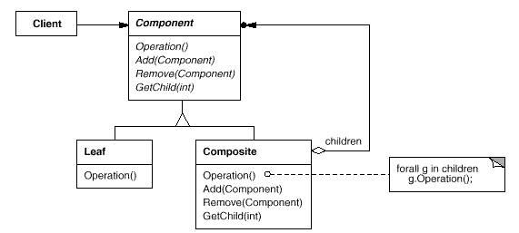

Composite
1. Usage
Composite is composing tree like structures as single object(container), and let clients to go through such composed objects and regular objects uniformly.
Qt Library has implicit support of Composite pattern due to ability to SetParent of QObject.
2. UML class diagram

(source: http://www.cs.unc.edu/~stotts/GOF/hires/pat4cfso.htm)

Typical Composite Object structure:

3. Pros
- It makes it easy to add new kinds of components
- It makes clients simpler, since they do not have to know if they are dealing with a leaf or a composite component
4. Cons
- can be difficult to restrict certain nodes to be added to Composite object.
5. Source code
Equipment such as computers and stereo components are often organized into part-whole or containment hierarchies. For example, a chassis can contain drives and planar boards, a bus can contain cards, and a cabinet can contain chassis, buses, and so forth. Such structures can be modeled naturally with the Composite pattern. Equipment class defines an interface for all equipment in the part-whole hierarchy.
// From http://www.cs.unc.edu/~stotts/GOF/hires/pat4cfso.htm
class Equipment {
public:
virtual ~Equipment();
const char* Name() { return _name; }
virtual Watt Power();
virtual Currency NetPrice();
virtual Currency DiscountPrice();
virtual void Add(Equipment*);
virtual void Remove(Equipment*);
virtual Iterator* CreateIterator();
protected:
Equipment(const char*);
private:
const char* _name;
};
Equipment declares operations that return the attributes of a piece of equipment, like its power consumption and cost. Subclasses implement these operations for specific kinds of equipment. Equipment also declares a CreateIterator operation that returns an Iterator (see Appendix C) for accessing its parts. The default implementation for this operation returns a NullIterator, which iterates over the empty set. Subclasses of Equipment might include Leaf classes that represent disk drives, integrated circuits, and switches:
class FloppyDisk : public Equipment {
public:
FloppyDisk(const char*);
virtual ~FloppyDisk();
virtual Watt Power();
virtual Currency NetPrice();
virtual Currency DiscountPrice();
};
CompositeEquipment is the base class for equipment that contains other equipment. Its also a subclass of Equipment.
class CompositeEquipment : public Equipment {
public:
virtual ~CompositeEquipment();
virtual Watt Power();
virtual Currency NetPrice();
virtual Currency DiscountPrice();
virtual void Add(Equipment*);
virtual void Remove(Equipment*);
virtual Iterator* CreateIterator();
protected:
CompositeEquipment(const char*);
private:
List _equipment;
};
CompositeEquipment defines the operations for accessing and managing subequipment. The operations Add and Remove insert and delete equipment from the list of equipment stored in the _equipment member. The operation CreateIterator returns an iterator (specifically, an instance of ListIterator) that will traverse this list. A default implementation of NetPrice might use CreateIterator to sum the net prices of the subequipment2:
Currency CompositeEquipment::NetPrice () {
Iterator* i = CreateIterator();
Currency total = 0;
for (i->First(); !i->IsDone(); i->Next()) {
total += i->CurrentItem()->NetPrice();
}
delete i;
return total;
}
Now we can represent a computer chassis as a subclass of CompositeEquipment called Chassis. Chassis inherits the child-related operations from CompositeEquipment.
class Chassis : public CompositeEquipment {
public:
Chassis(const char*);
virtual ~Chassis();
virtual Watt Power();
virtual Currency NetPrice();
virtual Currency DiscountPrice();
};
We can define other equipment containers such as Cabinet and Bus in a similar way. That gives us everything we need to assemble equipment into a (pretty simple) personal computer:
Cabinet* cabinet = new Cabinet("PC Cabinet");
Chassis* chassis = new Chassis("PC Chassis");
cabinet->Add(chassis);
Bus* bus = new Bus("MCA Bus");
bus->Add(new Card("16Mbs Token Ring"));
chassis->Add(bus);
chassis->Add(new FloppyDisk("3.5in Floppy"));
cout << "The net price is " << chassis->NetPrice() << endl;